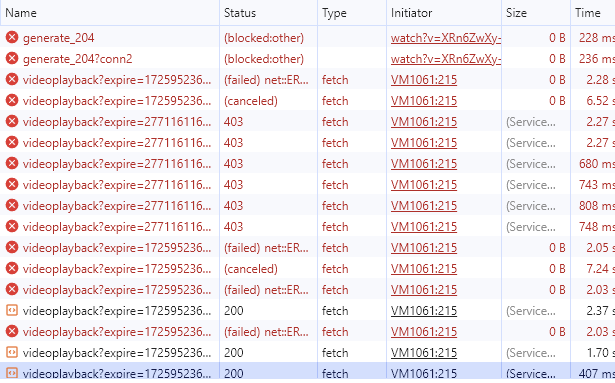
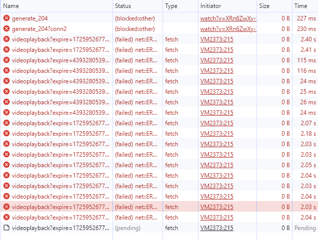
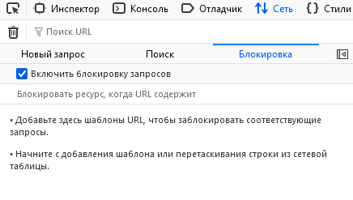

Почему при добавлении в хост файл записи
127.0.0.1 rr2—****.googlevideo.com
браузер все равно пытается загрузить с него видео и подолгу ожидает?
ipconfig /flushdns не помогает?
doh ?
ipconfig /flushdns не помогает, doh включено в хроме.
Попробуйте вместо 127.0.0.1 использовать 0.0.0.0. Или заблочьте через блокировщик рекламы. Я через uBlock блочил, работает норм.
www.youtube.com rr1---блаблабла.googlevideo.com * block
это как?
В файле hosts вместо 127.0.0.1 пишите адрес 0.0.0.0. Просто 127.0.0.1 может приводить к проблемам, если на компьютере запущен какой-нибудь сервер, а 0.0.0.0 в теории должен сразу ошибку возвращать.
Сейчас попробую. Я думал вместе, а не вместо.
Если doh включен, то записи в host вообще влияют или нет? Мне кажется, нет. Т.е. остается вариант с ublock
Заметил, что не все сервера моего оператора, это те, что rr2—****.googlevideo.com с пингом 0 мс не работают. Некоторые вполне номально грузят видео ютуба.
Кстати, это возможно 
Как вариант, попробовать отключить doh и потестить.
Возможно. Записи в хост точно влияют на тотже winmtr, там все работает как и должно.
doh не хочу отключать, зачем моему оператору видеть куда я захожу, установил днс 1.1.1.1.
Сейчас попробую ublock origin
Разве в ublock origin не так блокируются запросы?
||rr1---блаблабла.googlevideo.com
Это через мои фильтры, а я блочил через мои правила. Хз есть ли особая разница. Возможно, ваш вариант лучше, т.к. мой может не работать для встроенных видео.
Знаю, что мои фильтры меньше нагружают проц и работают быстрее. Поэтому ни разу не пользовался моими правилами.
perplexity говорит, что при doh хост файл не работает.
Сделал тоже через мои фильтры, работает без проблем.
Почему-то один и тотже сервер моего оператора < 1 мс пинг может какое-то время нормально грузить видео, а в другое время висеть и ничего не грузить. Как это работает? Правильно понимаю, что такие тоже надо блокировать?
Он и так видит, просто менее удобно. Ведь sni светится, по нему и происходит блокировка.
А hosts с doh должен работать. Но хромиум очень вредный и иногда, чтобы очистить кэш dns, надо перезапускать браузер.
это же легко проверить, просто вписать в хостс и посмотреть в браузере
{kind=link}
Не знаете как можно включить Encrypted ClientHello (ECH), чтобы оператор совсем ничего не видел?
Мне это проверять ни к чему, речь об авторе топика)
chrome://flags/#encrypted-client-hello переключить в enable
Но насколько знаю, очень мало сайтов поддерживают ech, ютуб тоже не факт
нет у меня такого флага Chrome 128.0.6613.120 (Official Build) (64-bit) (cohort: Stable)
Блокирование через ublock не помогает. Запрос действительно блокируется, но видео при этом не грузится.
Тут, оказывается, ограничение на кол-во сообщений в день, пришлось второй аккаунт регать 
Короче, это странно, что у тебя вообще видео не грузятся. Сейчас я потестил, если заблочить 2 группы адресов моего провайдера то начинает подсовывать 4 группы адресов из моего города. Если заблочить и их то подсовывает ростелекомовские. Если заблочить и их то он подсовывает адреса из США (Даллас, Техас). И видео всё еще воспроизводятся.
Ты уверен что gdpi нормально до гугло-кэшей за ТСПУ добирается? Через курл проверял?
Большинство видео ютуба загружаются с командой
goodbyedpi.exe -e 1 -p -r -m --reverse-frag --max-payload 0 --blacklist ..\russia-blacklist.txt --blacklist ..\russia-youtube.txt
Иногда некоторые тормозят
А если убрать -r -m и добавить --wrong-seq?
Какой-то разницы не заметил
Т.е. видео всё еще не грузится?
Большинство видео грузятся нормально. Но некоторые иногда начинают тормозить, особенно при перемотке, когда нужно срочно подгрузить новый блок, а он почему-то не загружается. В эти моменты во вкладке network браузера вообще ничего не происходит, ни ошибок, ни запросов.
Странно… Как вариант, смотреть с каких адресов тянется тормозящее видео и пробовать их блочить через ublock поштучно, до улучшения ситуации.
Что-то я логику не пойму по какому принципу их блокировать. Один и тотже сервер может возвращать как статус 200, так и ошибку.
Есть ли вообще смысл их блокировать? Есть те, что в США находятся и также возвращают 403:
rr5---sn-q4fl6nsl.googlevideo.com
В поле поиска по hello поищите
Нет такого. У вас он есть?
Ну в моем конкретном случае всё было очевидно: я попробовал загрузить непопулярный видос через yt-dlp, там были жуткие лаги. Я посмотрел откуда он тянется через флаг --get-url и, как я и ожидал, он тянулся с проблемных провайдерских гугл-кэшей. Я их заблочил в браузере и проблема на ютубе пропала, т.к. тянуться начало с каких-то других серваков, которые работали быстро, хоть и были расположены за ТСПУ.
Если видосы вообще перестают грузиться после прописывания блокировок - надо проверить откуда они тянуться и потом протестить через curl -sv -o NUL https://rr1---блаблабла Возможно ваша стратегия обхода не работает на эти конкретные гугл-кэши.
У меня нет хрома, а в опере и яндекс браузере - да, есть “Encrypted ClientHello”
Во время просмотра видео на ютубе у вас во вкладке network есть ошибки или задержки на запросах к иностранным серверам googlevideo?
Вы давно оперу обновляли? В версии 113.0.5230.62 (Official Build) Stable (64-bit) во флагах нет Encrypted ClientHello.
У меня основная машина 7-ка, опера там не обновляется, и флаг есть в настройках. А на 10-ке реально исчезла опция. В интернетах пишут, что теперь ech включен по умолчанию, и его не так-то просто отключить Disabling Encrypted ClientHello in Google Chrome, and Why | Chaser Systems. В общем, ech теперь “из коробки” на хроме.
Есть ли вообще смысл блокировать отдельные серверы? По моим наблюдениям ошибки и замедления ответов серверов происходят как с российскими серверами, так и с иностранными. При чем один и тот же сервер независимо от страны может как передавать нормально данные, так и вызывать ошибки и замедления. Есть здесь кто-нибудь, кто разбирается в этом?
Репостну тут.
В лисе, при включенном dns-over-https, судя по всему, игнорится hosts. В хроме работает.
Я пришел к выводу, что блокирование серверов бессмысленно. На одном видео один и тот же сервер может выдавать ошибки, в то время как на другом видео этот же сервер будет стабильно загружать видео без задержек.
В моем случае блокировка части серверов помогла значительно. Т.к. сервера моего провайдера лагают при кэшировании на них видосов извне. Т.е. с них качается норм, а сами они качают медленно. Если видео популярное и уже закэшировано, то проблем нет. Если видео непопулярное то лаги. А сервера, расположенные за ТСПУ, работают без проблем.
Вы вообще все сервера своего провайдера заблокировали?
Угу.
А на остальных серверах, т.е. всех, кроме вашего провайдера, ошибки или задержки есть?
Есть NS_BINDING_ABORTED, но он вообще на всех серверах проскакивает и был ещё до блокировки ютуба. И есть 403 от серверов в США, с этим вроде сейчас ничего не сделать (кроме использования ВПН). Задержек нет, все в пределах 10-30 мс. Работает всё гладко.
Я бы вам посоветовал сделать так: проверить через yt-dlp --get-url откуда отдаются видео в первую очередь. Узнать все номера для rr*-- с помощью пинга, потом заблочить их через ublock в браузере вот так:
||rr1---sn-n3toxu-axql.googlevideo.com^
И проверить что будет.
Какой командой запускаете goodbyedpi?
Конкретно для googlevideo у меня работает -e1 --reverse-frag.
Полную команду запуска можете написать?
Кроме вашего оператора (с пингом около 1 мс) еще что-нибудь блокировали?
goodbyedpi.exe -e1 -f2 --reverse-frag --wrong-seq --blacklist ..\my_hostlist.txt
Нет, не блокировал.
wrong-seq для гуглвидео не нужен мне, но нужен для некоторых других сайтов, поэтому он там присутствует.
Спасибо.
Оно точно без пробелов идет, не вот так?
goodbyedpi.exe -e 1 -f 2 --reverse-frag --wrong-seq --blacklist ..\my_hostlist.txt
И что тут лежит my_hostlist.txt?
Можно с пробелами.
Хостлист собственный, под свои нужды, потому что дефолтный слишком большой. В вашем случае это влиять не должно.
Эти добавляли туда? Или может что-то еще для ютуба?
youtube.com
youtu.be
googlevideo.com
ytimg.com
Я без понятия что именно из всего этого нужно, а что нет, потому что добавлял всё подряд.
googlevideo.com
ytimg.com
youtube.com
youtu.be
yt.be
youtubekids.com
youtubeeducation.com
youtube-nocookie.com
youtubefanfest.com
youtubegaming.com
youtubego.com
youtubemobilesupport.com
withyoutube.com
ytimg.l.google.com
nhacmp3youtube.com
googleusercontent.com
ggpht.com
googleapis.com
gstatic.com
gvt1.com
1e100.net
Сейчас попробую потестировать ровно как у вас. Заблокировал все сервера googlevideo с пингом 1 мс, получилось 2 группы с названием, отличающимся только цифрой, по 8 серверов в каждой группе.
Можно ещё сделать tracert, чтобы прикинуть какие ближе, какие дальше.
Я winmtr’ом проверял. Получилось две группы с номерами 1…8.
Есть московские сервера, которые в начале загрузки видео тормозят несколько секунд, например этот, который не моего оператора и в 26 мс от меня:
rr15---sn-n8v7kn7e.googlevideo.com
Если и его заблокировать, то дело выглядит так:

Видео перед загрузкой все равно висит несколько секунд.
Если перебанить вообще все московские сервера, которые не загружают видео, тогда вообще видео никогда не загрузится.

У меня ситуация следующая
- С незаблоченными провайдерскими кэшами (
rr*---sn-n3toxu-axql):
– Сначала безбожный таймаут 7.5 секунд, после которого идет обрыв:
– Потом закачка пошла, но с левого сервера:
- С заблоченными провайдерскими кэшами:
– Время ответа от сервера 17 мс, сразу же идет поток данных:
{kind=link}
{kind=link}
{kind=link}
Кроме того сыпятся ошибки 403 от серверов в США, потому что в их запрос подсовывается фейковый ip (провайдером?)
На моем скрине выше заблочено через хост, поэтому блокируемый запрос висит довольно долго. Если блочить через ublock, тогда блочится быстрее за несколько милисекунд.
Да, все так, только не на все видео ютуб может быстро предложить сервер с ответом 200. Иной раз сидишь и ждешь статус 200 секунд 10…30. Или вообще можешь не дождаться.
Ну я для теста выбрал видос, опубликованный час назад с 40 просмотрами, на английском. Но проблем не возникло.
А вы на своих скриншотах добавьте столбец url, а то непонятно куда идет запрос. И можно waterfall в latency переключить, чтобы проще было оценить задержки.
Я на скриншоте выше выложил где вообще все красное и видео не загрузилось при блокировании московских серверов. Там видео вообще несколько лет назад выпущено. И это не помещало ему не загрузиться совсем.
Так вот, когда сервера с ответом 200 нет можно сколько угодно ждать, видео все равно не загрузится.
Ну я то только своего провайдера заблочил, а на вашем последнем скрине вы вообще все что нашли переблочили.
Можете знаете как попробовать? Зайдите на https://redirector.googlevideo.com/report_mapping?di=no, запишите там свой кластер (например, мой это skynet-led2). Потом найдите ip адресов, образованных по вот такой схеме: r1.skynet-led2.googlevideo.com Он должен совпадать с ip ваших гугл кэшей, то есть в моем случае с rr1---sn-n3toxu-axql.googlevideo.com. Так вы точно определите какие сервера принадлежат вашему провайдеру.
В статусе (failed) net::ER... - значит заблокировано в моем хост файле. Статус (canceled) - заблокировано не по моей вине, видно наши операторы стараются. (blocked:other) - заблокировано ublock. Столбик Time показывает тоже, что и waterfall.
Я моего оператора и так уже все перебанил. В статусе (canceled) у меня все приходят с пингом более 20 мс.
Ну я хз тогда что вам посоветовать. Возможно, для вашей ситуации действительно этот метод бесполезен.
Фокус в том, что не на все видео ютуб может предложить сервер со статусом 200. Может придти 3 разных сервера со статусом (canceled) и все. И тогда остается только ждать. Или я просто не знаю как это победить.
Для вашей тоже, если вам придет 3 ответа от разных серверов со статусом (canceled) также будете сидеть и ждать пока не появится хоть один 200.
Или надо как-то настраивать goodbyedpi так, чтобы (canceled) не появлялись вообще.
Я уже писал в посте выше, что даже когда я блочу вообще всё в своем городе, мне находит рабочие сервера в Техасе. Так что у меня пока не совсем как у вас ситуация.
Сейчас с помощью дополнения redirector для хрома я смог поменять запрос к тем адресам, что возвращают 403, таким образом, чтобы в них был мой ip, а не какой-то левый, а также поставил в них флаг requiressl=no, однако они всё еще возвращают 403…
Кто хочет поэкспериментировать сам, в графе include pattern пишем *googlevideo.com/videoplayback*&ip=*&id=*&requiressl=yes*, в графе redirect to $1googlevideo.com/videoplayback$2&ip=ваш_айпи_адрес&id=$4&requiressl=no$5, в графу example url вставляет целиком длинную проблемную ссылку, взятую из F12. В доп. параметрах ставим галочки на все опции.
У вас тоже нет никаких расширений с прокси/впн?
У меня ни разу не было 403 (тьфу-тьфу). С gdpi большая часть видео идет с работающих ggc провайдера, новые или редкие видео грузятся с штатовских ip. Но при повторном просмотре уже с местных ip. Если заблокировать местные, то все идет со штатовских. Doh в браузере американский, в ютубовском аккаунте выбрана европейская страна, периодически захожу туда через европейский прокси (не знаю, может это как-то влияет?) Без прокси ip в запросе мой российский
Вы не проверяли статус (canceled) при включенном goodbyedpi у вас не приходит никогда?
Может быть со штатовских (как в случае с Техасом выше), а может быть с нидерландских или московских. Попингуйте их в Ping-Admin.Com - web site and server monitoring. Site availability checks Откуда меньше пинг? (можно отсортировать результат). Whois недостоверен в данном случае.
Редкие видео вот с таких ggc rr1---sn-c0q7lnse.googlevideo.com, ip 74.125.173.70 - это сша, средний пинг 51,88 мс
Эта проблема у меня даже на чистом профиле браузера присутствует. И в лисе, и в хроме. Хз с чем связано. Если смотреть через мониторинг сети, то в тех запросах, которые возвращают 403, подсовывается какой-то левый айпишник. Без понятия почему это происходит.
Так и никто не понимает, даже ValdikSS Пользователи в РФ сообщают о проблемах с доступом в YouTube / Комментарии / Хабр
Короче, поднастроил uBlock, чтобы заранее блокировать запросы, которые всё равно вернут 403. По идее это должно немного ускорить прогрузки.
В синтаксисе ublock я не особо разбираюсь, поэтому не уверен что сделал оптимально.
||googlevideo.com/videoplayback^
@@||googlevideo.com/videoplayback*ip=ваш_айпи_адрес*^
||rr1---sn-n3toxu-axql.googlevideo.com^$important
||rr2---sn-n3toxu-axql.googlevideo.com^$important
||rr3---sn-n3toxu-axql.googlevideo.com^$important
||rr4---sn-n3toxu-axql.googlevideo.com^$important
||rr5---sn-n3toxu-axql.googlevideo.com^$important
||rr6---sn-n3toxu-axql.googlevideo.com^$important
||rr7---sn-n3toxu-axql.googlevideo.com^$important
||rr8---sn-n3toxu-axql.googlevideo.com^$important
– Первая строчка блочит все обращения к googlevideo.
– Вторая строчка - исключение. Она разрешает те обращения, в которых указан правильный (ваш) айпишник. Т.к. 403 возвращается именно от запросов с фейковым айпи.
– Ниже заблочены гугл-кэши моего провайдера. Important нужен, чтобы они не перезаписались исключением (ведь в них правильный айпи, они не возвращают 403, просто тормозят).
Результат:
{kind=link}
Оказывается, чтобы firefox с DoH не игнорировал hosts , нужно переключить настройку network.trr.exclude-etc-hosts в false
Полезная инфа, спасибо.
У меня есть DoH в файрфоксе и нельзяграмм в хостс. Настройка стоит в true но нельзяграмм работает. И кто, получается, “виноват” DoH или хостс?
Так надо в false же.
Я про то, что у меня при DoH файл host не игнорируется. Ну либо этот DoH выдает те же IP нельзяграмма, что и прописаны в hosts
Хз. Проверь через about:networking#dnslookuptool.
И что там проверять? IP в разделе DNS полностью совпадают с прописанными в hosts. Но вот взял их браузер оттуда или это DoH такие выдал - непонятно.
Удалю из hosts и перезагружусь для верности - для проверки.
Можно в hosts прописать фейковый айпи для теста. Потом проверить какой выдастся. Если фейковый - то hosts выдает, если нет - то doh.
Кстати, я тут тестил и изменения в hosts файле сразу подтягиваются, не нужно ни релогин, ни даже flushdns делать. Добавил - сохранил - готово.
Короче, теперь DoH выдает совсем другие IP. Совпадение? Не думаю
Про это я слышал, но было неск. случаев, когда это не срабатывало. Все заработало только после перезагрузки.
Перенаправил все домены на 4 нуля, очистил кэш DNS в мозилле - инста по прежнему открывается. Перезагрузился и уже не открывается - мгновенное “Невозможно установить соединение”. Вопрос снят, как бы )
Винда 11 21H2 если это важно.
в firefox можно воспользоваться разделом блокировка, у меня убирает сразу же прописанные сервера из пула тех, с которых будет загружаться видео и перенаправляет на другие
не знаю правда действует в рамках одной страницы или всех, лень тестировать (но возможно, кто то тогда допишет скрипт), потому что пока на текущем провайдере это не требуется

Добрый день. Я вашим методом добавил старые rrNxxxxxxx в блокировку uBlock’ом. Разрешив новые адреса только с моим айпишником. А что должно произойти дальше? Каждый раз, когда я открываю видео на Ютуб, он ломится по этим старым адресам, uB блочит все запросы, и на этом всё.
Я думал, основной код Ютуб должен понять, что старые адреса недоступны и начать запрашивать новые.
Кроме того, я не совсем понимаю, что вообще происходит. У меня включен DoH. Как так получается, что провайдер подсовывает мне фейковые адреса серверов?
Заранее большое спасибо.
Во-первых, тот метод что я выше описывал устарел. Вместо первых двух строчек достаточно просто
||googlevideo.com/videoplayback^$method=get
Во-вторых, он просто заранее блокирует запрос, который вернет ошибку 403. Прироста производительности там почти не будет.
Левые айпишники хз откуда появляются. Я эту проблему ещё до начала блокировок видел, так что я даже не уверен что это дело рук РКН.
Я думал, основной код Ютуб должен понять, что старые адреса недоступны и начать запрашивать новые.
К сожалению, это так не работает. Единственный способ заставить ютуб отдавать какие-то другие кэш-сервера - это пустить ютуб через прокси.
Спасибо за ответ. Вообще, спасибо всем участникам, кто здесь освещает происходящее.
Правда, я теперь я совсем не знаю, что делать. Я же так понимаю, если эта фигня с 403 по адресам rrxxxxxx.googlevideo.com началась, то пробовать разные параметры у гудбая бесполезно?
(Правда, у другого человека, подключённого к тому же роутеру, через PowerTunnel в андроидном ФФ Ютуб работает).
UPD. Нет, пошаманить с настройками всё-таки помогло. Ещё раз спасибо всем, и главное — Валдику!!! 


Конкретно от ошибок 403, насколько мне известно, гудбай и т.п. не помогают. Они вызваны не то левым айпи в запросе, не то тем что ютуб тычется по GET, а не по POST.
Гудбай помогает от ошибок с ресетом и от ошибок с таймаутом.
PS: рад, что у вас всё заработало.